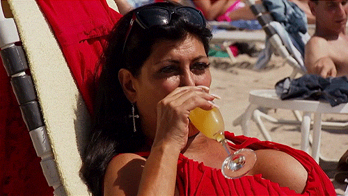

Техническое задание по тиражированию макетов
Задание
Хай, фолкс!
Меня зовут Майк и тут такое дело: для пиццерии в Брашове нужно подогнать под разные форматы несколько макетов. У вас есть отправная точка: мы сделали за вас один полный набор макетов (см. картинки ниже).
Чтобы вам было понятно, что мы хотим, нате список необходимых макетов (информация, которая должна присутствовать обязательно, указана под заголовками):
Картинки кликабельны, если что.
Тейблтент А5
— Размер: А5 (148 × 210 см);
— логотип;
— цена (указана в черном прямоугольнике со скругленными краями);
— название и описание (это весь текст, который вы видите сейчас на этой картинке).
Файл называется RO Resto A5.ai (ссылка на шаблоны в самом низу страницы).

Постер
Фактически постер — это увеличенная копия тейблтента.
— Размер: А3 (297 × 420 см);
— логотип;
— цена;
— название и описание.
Файл называется RO Resto A3.ai
Картинка для соцсети
— Размер: 1600 × 800 пкс;
— футер для доставки;
— название и описание.
Файл называется RO Social 1600 x 800 px.ai

ТВ-борды (базовый и экспресс-форматы)
— Размер: 1920 × 1080 пкс;
— название и описание;
— цены (уже указаны в футерах).
Файл для базовой пиццерии называется RO LCD Board.ai, а для Экспресса — RO LCD Board Xprss.ai

Экран заказов
— Размер: 1920 × 1080 пкс;
— название и описание;
— тектовая часть не должна выходить за рамки, обозначенные направляющими (все, что за их пределами, обрезается при отображении на экране).
Файл называется RO LCD Promo.ai

Пластиковая панель
— Размер: 120 × 30 см;
— название и описание;
— цена.
Файл называется RO Resto 120 x 30 cm.ai

Attention, please!
Ориентируйтесь на направляющие в шаблонах. Это жизненно важно для экрана выдачи заказа.
Это вам понадобится
Вам потребуются уже готовые макеты листовок, на основе которых вы и будете делать красоту.
Где найти то, что надо тиражировать?
А еще вам понадобятся шаблоны макетов. Качайте по ссылке ниже (формат .Ai, версия CS6).
Ребятки, не забываем про гайдлайн «Додо Пиццы». Прочитайте его, чтобы некоторые моменты стали ясней.
Что мы ждем от вас?
Конечно же, мы ждем красоты и феерии. Ну, а еще джепеги: тв-борды, экран заказа и картинку для соцсети присылайте в масштабе 1:1, а все остальное — не менее 1000 пкс по широкой стороне.
Делать макеты для всех оставшихся трех пицц необязательно (для Чоризо, мы уже все собрали). Выберите, например, только Гратар. Или только Романеску. Или вообще только Дракулу. Выбор за вами.
Готовые макеты отправляйте на имейл s.bolotov@dodopizza.com, в копию добавьте l.danschikov@dodopizza.com. В теме письма укажите «Плюшки для Майкушки».
